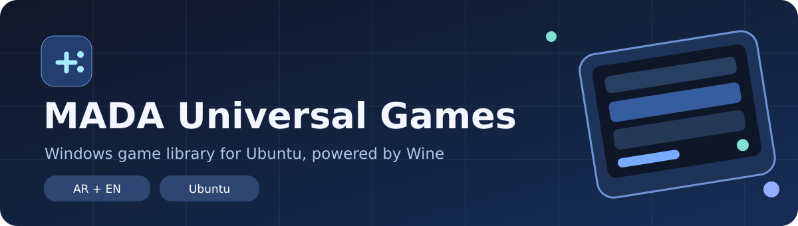
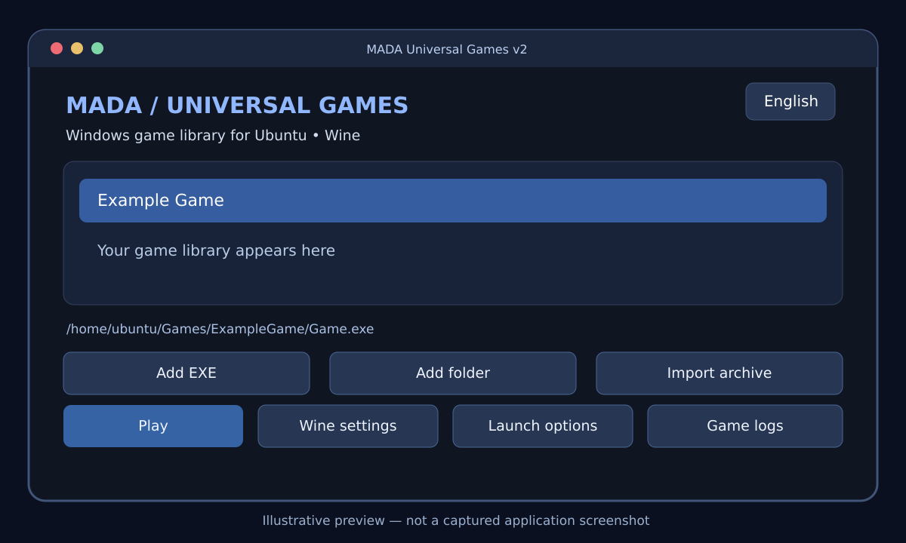
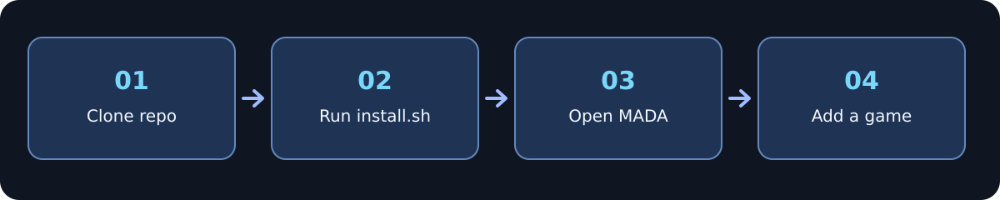

عالم ألعابك، في مكان واحد.
Your games. One home.
نظّم ألعاب Windows الموجودة لديك، واستوردها بسهولة، وجرّب تشغيل الألعاب المتوافقة على Ubuntu باستخدام Wine. واجهة عربية وإنجليزية صُممت لتبقي مكتبتك مرتبة.
Keep your owned Windows games organized on Ubuntu. Import local game files and try launching compatible titles using Wine, with a bilingual desktop experience.
نسخة تجريبية. لا يضمن Wine تشغيل كل ألعاب Windows.
Early release. Wine compatibility varies from game to game.

كل ما تحتاجه لإدارة مكتبتك
Built for your own game library
أدوات عملية لإضافة الألعاب وتنظيمها ومحاولة تشغيلها من واجهة واحدة.
Tools for importing, organizing and trying to launch your locally owned games.
مكتبة منظمة
Organized library
أضف ملفات EXE أو مجلدات الألعاب وشاهد ألعابك في قائمة واحدة.
Add EXE files or folders, and keep your titles in one place.
استيراد الأرشيف
Archive import
استيراد ZIP وRAR و7Z باستخدام أدوات فك الضغط المدعومة.
Import ZIP, RAR and 7Z archives with supported extraction tools.
إعدادات Wine مستقلة
Wine per game
بيئة Wine مستقلة لكل لعبة لتقليل تعارض الإعدادات.
Separate Wine prefixes help isolate game configurations.
عربي وإنجليزي
Arabic + English
تبديل لغة الواجهة ودعم ترتيب العربية من اليمين إلى اليسار.
Switch interface language with RTL layout for Arabic.
تشخيص الأعطال
Useful game logs
افتح سجلات تشغيل الألعاب وإعدادات Wine عند ظهور مشكلة.
Inspect logs and open Wine settings when troubleshooting.
بيانات محلية
Stored locally
المكتبة وإعداداتها محفوظة على جهازك، ولا تحتاج إلى حساب خاص بالتطبيق.
Your library metadata stays on your device; no app account needed.
نظرة على MADA Games
Explore the experience
رسومات توضيحية للمشروع وطريقة عمله، وليست لقطات شاشة فعلية من التشغيل.
Illustrations of the UI and workflow — not actual runtime screenshots.


ابدأ على Ubuntu
Get started on Ubuntu
متطلبات أساسية: اتصال أثناء التثبيت، Python 3، وWine، وPyQt6، وunar.
Requires internet during setup, Python 3, Wine, PyQt6 and unar.
افتح Terminal
Open Terminal
تأكد من توفر git على Ubuntu.
Ensure git is available on Ubuntu.
نزّل المشروع
Clone the repository
استخدم أمر git clone الظاهر أدناه.
Use the git clone command below.
شغّل المثبّت
Run the installer
راجع ملف install.sh قبل تشغيله لأنه يستخدم sudo.
Review install.sh before running; it uses sudo.
الأوامر:
Commands:
sudo apt update sudo apt install -y git git clone https://github.com/attack988/MADA-Universal-Games.git cd MADA-Universal-Games chmod +x install.sh ./install.sh
⚠️ مهم: البرنامج لا يتضمن ألعابًا، ولا يتجاوز DRM، وتشغيل اللعبة يعتمد على توافقها مع Wine. لا تشغّل ملفات EXE مجهولة المصدر.
⚠️ Important: No games are bundled, DRM is not bypassed, and compatibility is game-dependent. Only use executables from trusted sources.
أسئلة شائعة
Frequently asked
هل يشغل كل ألعاب Windows؟
Will every Windows game work?
لا. قد تفشل بعض الألعاب بسبب التوافق أو الاعتماديات أو أنظمة مكافحة الغش.
No. Compatibility varies, especially with certain anti-cheat systems and dependencies.
هل أحتاج إلى الإنترنت عند اللعب؟
Is internet required to play?
التثبيت الأول يحتاج إلى الإنترنت. بعد ذلك تعتمد الحاجة للإنترنت على اللعبة نفسها.
Internet is needed for initial setup; later it depends on the game.
هل يعمل على Windows وmacOS؟
Does it run on Windows and macOS?
هذه النسخة مخصصة لـUbuntu، وليست تطبيقًا اختُبر على كل الأنظمة.
This edition targets Ubuntu. It has not been validated across other operating systems.